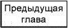
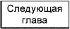

| Назад | Содержание | Вперед | Стартовая страница | Версия для печати |
|
Депутатов В.П., Воробьев А.В. Учебник по первой медицинской помощи для учителей сельских школ |
2. | Характерные признаки нарушения состояния здоровья ребенка, требующие безотлагательного оказания первой медицинской помощи. | ||
|
Важным показателем общего состояния здоровья является сознание. В ясном сознании сохраняются ориентировка в месте, времени, ситуации и собственной личности, возможен продуктивный контакт с человеком и имеется адекватная реакция на внешние стимулы. При угнетении сознания указанные свойства уменьшаются или теряются полностью. В зависимости от степени угнетения сознания выделяют состояние оглушения, сопора и комы. В состоянии оглушения может сохраняться ориентировочная реакция на внешние стимулы, в сопоре еще наблюдается реакция пробуждения на внешние стимулы. При утрате сознания контакт с больным (пораженным) ребенком вообще не возможен. Для количественной оценки степени угнетения сознания разработаны формализованные схемы, из которых самая простая называется шкала комы Глазго (по названию города). Шкала включает простые клинические признаки, которые могут быть выявлены лицами не имеющими специального образования. Цвет кожных покровов и видимых слизистых оболочек (губ, глаз): розовый, синюшный, бледный, желтушость. Дыхание: нормальное, учащенное, отсутствует, нарушено (редкое, судорожное, поверхностное, хрипящее и т.п.) Пульс на сонных артериях: Зрачки: расширенные, суженные. Отсутствие сознания у пострадавшего определяется визуально, а для окончательного решения вопроса необходимо громко обратиться к пострадавшему с вопросом о его самочувствии. Также визуально оценивается цвет кожных покровов и слизистых, а также состояние дыхания (по экскурсии грудной клетки). Для определения пульса на сонной артерии четыре пальца правой руки накладывают на адамово яблоко и, продвигая их немного в сторону, нащупывают пульсацию общей сонной артерии. Состояние зрачков при закрытых глазах определяют следующим образом: подушечки указательных пальцев накладывают на верхние веки обоих глаз и, слегка придавливая их к глазному яблоку, поднимают вверх. Глазная щель раскрывается и на белом фоне становится видной округлая радужка, а в центре ее темные зрачки округлой формы, состояние которых (суженные или расширенные) оценивают по площади радужки, которую они занимают. Если пострадавший в сознании, а до этого находился в состоянии обморока или в бессознательном состоянии, но с сохранившимся устойчивым дыханием и пульсом, его следует уложить в постель, или в полевых условиях на подстилку, например, из одежды; расстегнуть одежду, стесняющую дыхание, создать приток свежего воздуха; согреть пострадавшего, если холодно или обеспечить прохладу при жаре; создать покой, дать выпить 15 — 20 капель настойки валерианы; непрерывно наблюдать за пульсом и дыханием. Если пострадавший находится без сознания, необходимо наблюдать за его дыханием и в случае нарушения дыхания из-за западения языка, выдвинуть нижнюю челюсть вперед. Для этого четырьмя пальцами обеих рук захватывают нижнюю челюсть сзади за углы, и, упираясь большими пальцами в ее края ниже углов рта, оттягивают и выдвигают вперед так, чтобы нижние зубы оказались впереди верхних. Поддерживать челюсть в таком положении следует пока не прекратится западение языка. Пострадавшему, находящемуся в бессознательном состоянии, необходимо дать понюхать нашатырный спирт и попрыскать на лицо холодной водой. При возникновении у пострадавшего рвоты нужно немедленно повернуть голову и плечи набок для удаления рвотных масс. В случае если пострадавший дышит судорожно и редко, но у него имеется пульс необходимо немедля делать искусственное дыхание, предварительно освободив пострадавшего от влияния вредных факторов среды. Если пострадавший находится без сознания и у него отсутствует дыхание и не прощупывается пульс, кожные покровы синюшные и расширены зрачки следует без промедления приступить к комплексу реанимационных мероприятий. | |
|  |
|  |